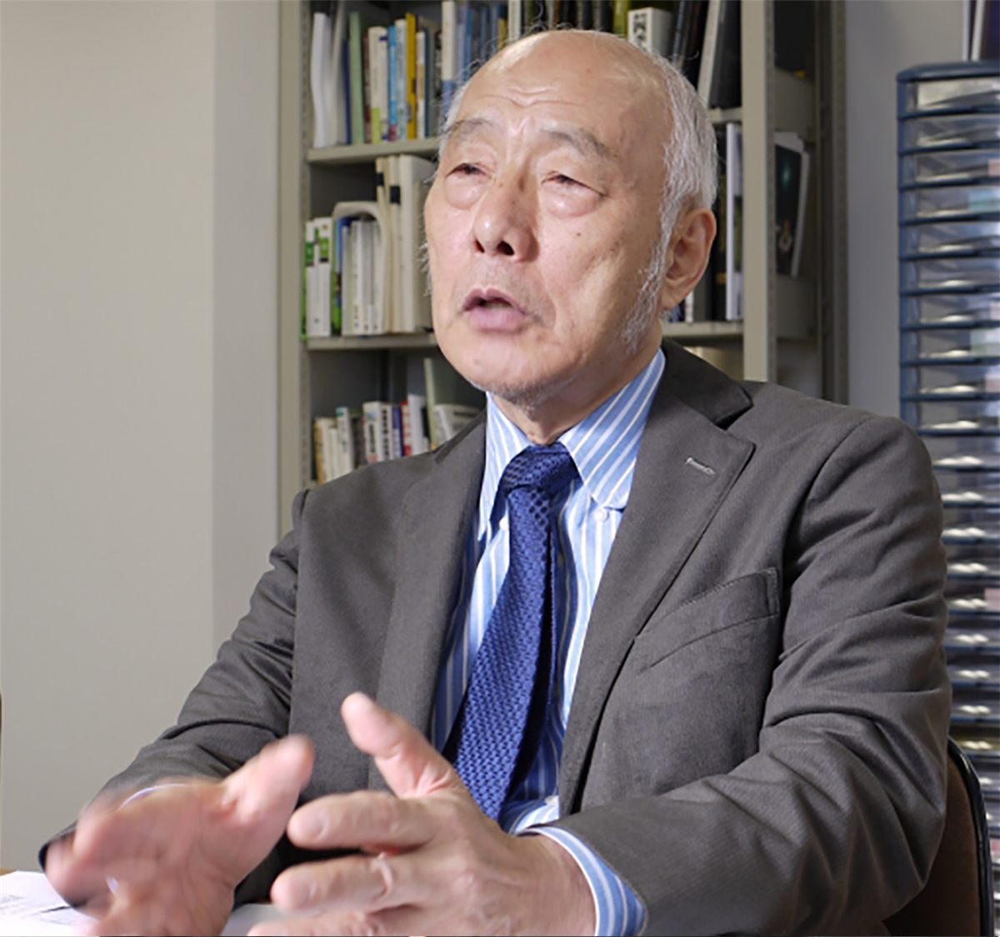
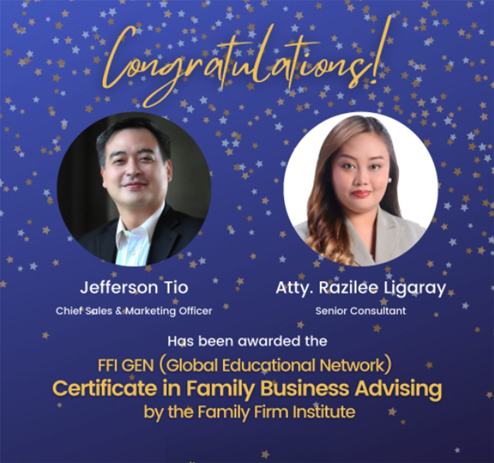
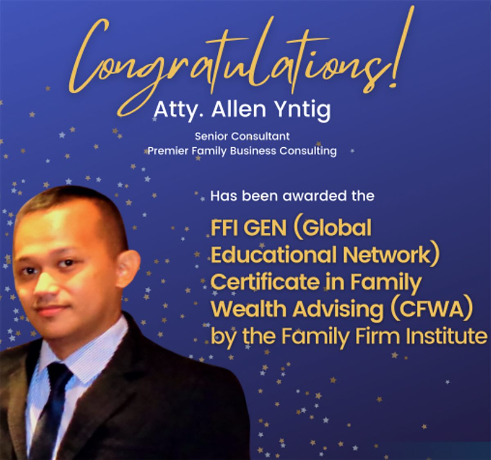

Family business longevity
The Secrets of the Thousand-Year Heritage: Lessons in Business Longevity with Professor Toshio Goto
by Ruby Joy Limbaga
Read the article →

Family meetings
Christian Stewart’s The Value of Family Meetings During the Pandemic
by Maria Chonita Rivera-Cejas
Read the article →

Firm news
Razilee Rae Ligaray and Jefferson Tio Receive Elite Global Distinction in Family Business Advising
by Jefferson Tio
Read the article →

Firm news
Safeguarding the Wealth of Generations: Atty. Allan Yntig’s Global Milestone in Family Wealth Stewardship
by Casey Andre Que
Read the article →